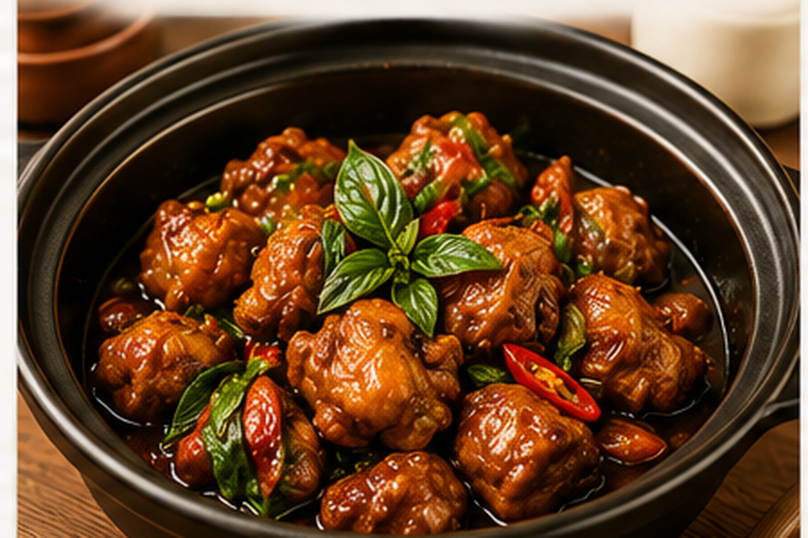
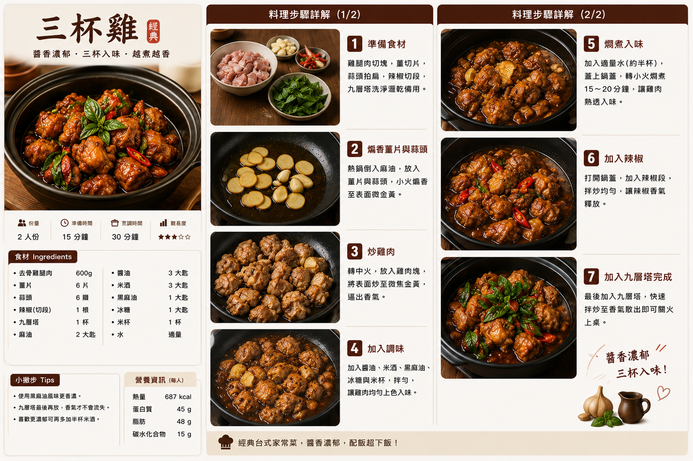

三杯雞
雞腿肉以香油、醬油與米酒調味，搭配薑、蒜與青蔥慢慢收汁，最後加入九層塔提香，醬香濃郁、雞肉嫩滑，是經典台式家常菜。
食譜指南
點擊可放大檢視 🔍
料理步驟
共 7 步01
雞腿肉切成約 4 公分塊；薑切薄片、大蒜拍扁、青蔥切段，九層塔摘下葉片洗淨並瀝乾。
02
炒鍋加入香油，中小火放入薑片與大蒜，慢慢煸炒至薑片邊緣微金黃、香氣明顯。
03
加入雞腿肉轉中火翻炒，將雞肉表面煎至金黃並炒出油脂，讓肉香更集中。
04
加入醬油、米酒與砂糖拌炒均勻，再加入青蔥段，讓雞肉充分裹上醬色。
05
加入水，蓋上鍋蓋轉中小火燜煮約 12–15 分鐘，直到雞肉熟透並吸收醬汁。
06
打開鍋蓋轉中火翻拌，讓醬汁逐漸濃縮；試味後如需要再以食鹽微調。
07
最後加入九層塔，快速翻炒約 20–30 秒至葉片變軟、香氣釋放，立即關火盛盤。